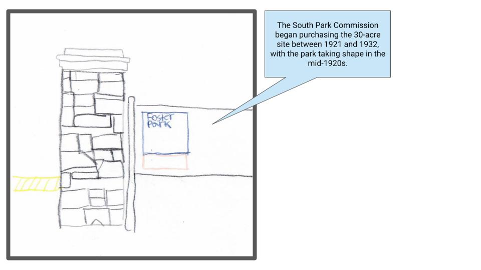
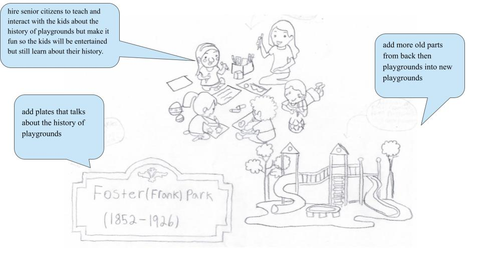

Foster Park honors J. Frank Foster (1852-1926), long-time South Park System superintendent and a leader in park management throughout the United States. Having begun as engineer in the 1870s, Foster became superintendent in 1891 when the South Park Commission was preparing for the World's Columbian Exposition to open in Jackson Park two years later.
My plan is to add more old parts from back then playgrounds into new playgrounds, add plates that talks about the history of playgrounds, hire senior citizens to teach and interact with the kids about the history of playgrounds but make it fun so the kids will be entertained but still learn about their history. This will happened only in the summer.
 